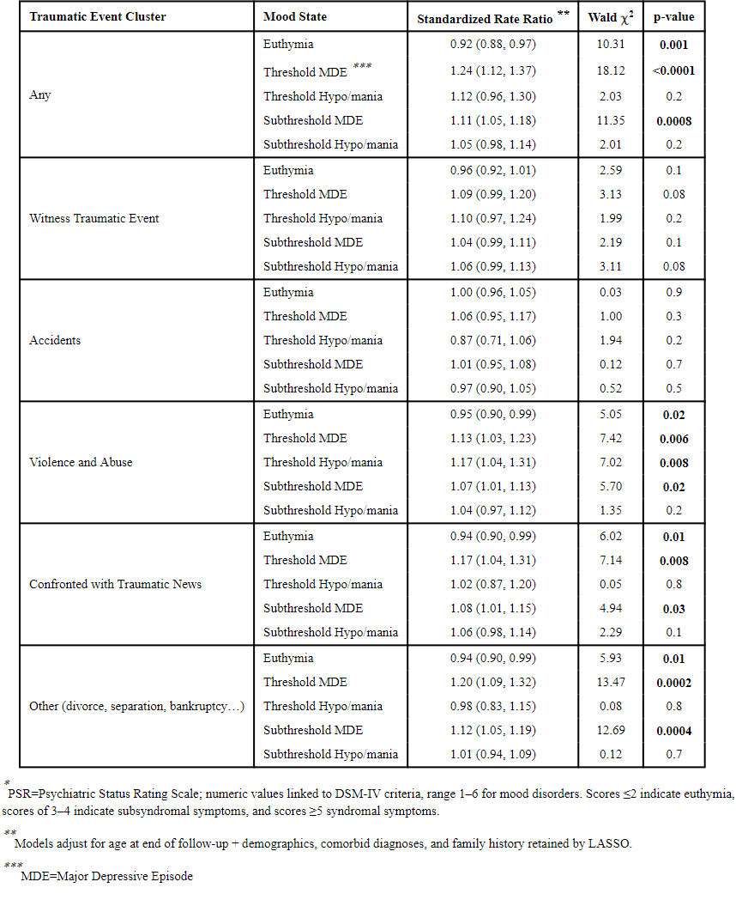

Children who face traumatic events (especially abuse) have a higher chance of being diagnosed with bipolar disorder as well as earlier onset BD, worsened/more frequent symptoms, greater recurrences. “participants with a lifetime history of at least one TE (84%), particularly those with exposure to abuse (44.5%) and violence, showed worse mood course, more non-mood psychopathology, lower SES, and poorer psychosocial functioning as compared to those without TEs. Participants with lifetime TEs had earlier BD onset (Cohen’s d=0.63) and greater sub/threshold mood symptomatology” (Pascual)
 Poisson regressions of PSR* mood states (% of time) as a function of traumatic events rate, from Pascual et al.This table shows the PSR (psychiatric status rating) states connected to different types of trauma experienced by children and the occurrence of symptoms related to BPD experienced.
Information by Andreu Pascual et al.'s "The Effect of Traumatic Events on the Longitudinal Course and Outcomes of Youth with Bipolar Disorder." (TW: physical/sexual abuse, suicide)